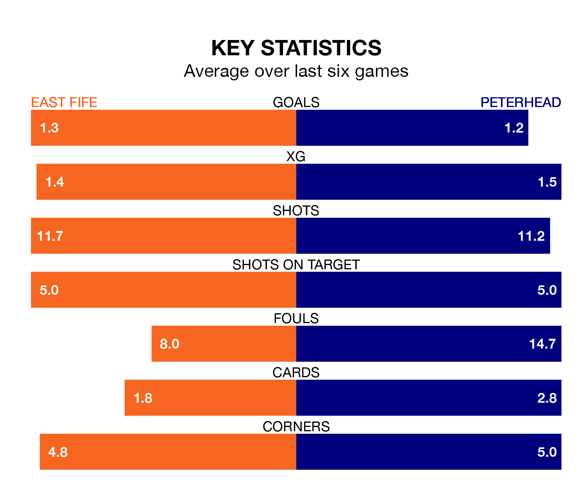

Peterhead travel to the MGM Timber Bayview Stadium for Saturday's match against East Fife looking to bounce back from defeat last time out in League Two.
The Blue Toon, who sit second in the league after 20 games, fell to a 2-0 away defeat to Stranraer on January 13.
They face an East Fife side who secured a draw in their last match, a 1-1 tie with Clyde, and who sit seventh in the table.
With 33 goals in 20 games so far this season, Peterhead are the league's third-highest scorers with 1.6 goals per game. And they are conceding fewer than average, letting in 21 goals at a rate of 1.0 per game.
East Fife, meanwhile, are below average scorers, with 1.3 goals per game, compared to a league average of 1.4. They have also conceded 1.3 goals per game.
In the last 10 years, East Fife and Peterhead have played each other on 20 occasions. They won eight each, and they drew four times.
On average, the Fifers scored 1.1 goals and the Blue Toon 1.1 in those matches.
Their last meeting was on November 4, when Peterhead won 2-0 at home.
In Allan Fleming, the Fifers can rely on one of the league's safest pair of hands. He has kept five clean sheets in his 19 appearances this season, and only two other 'keepers – Stenhousemuir's Darren Jamieson and Forfar Athletic's Marc McCallum – have been able to prevent the opposition scoring on more occasions in League Two.
In the Blue Toon's net, Stuart McKenzie has four clean sheets in 19 games.
The hosts are in mixed form in League Two, with two wins and two draws from their last six games.
With two wins and four losses over that period, the away side's form is slightly worse – they have taken six points from 18, compared to East Fife's eight.
Updated: 13:09 (UTC), 17/01/24